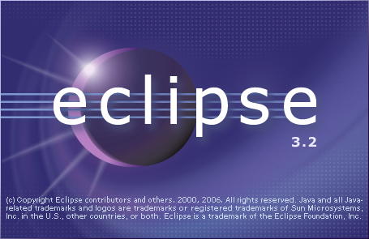
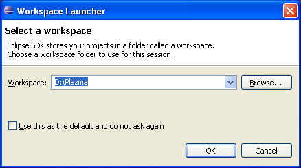

Eclipse IDE можно загрузить из сайта http://www.eclipse.org/downloads
Для запуска - выполнить файл eclipse.exe (Windows) или eclipse (Linux)
|  |
После запуска Eclipse Вам необходимо выбрать Workspace (рабочее пространство).
Workspace - это обычная папка в файловой системе, где будут размещены Ваши проекты.
В будущем Вы можете работать с несколькими Workspace, указывая при запуске Eclipse текущий Workspace.
|  |